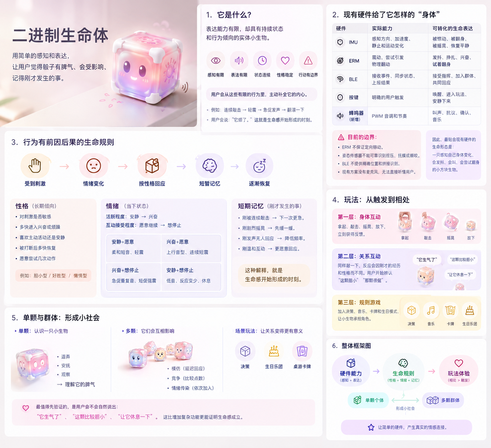
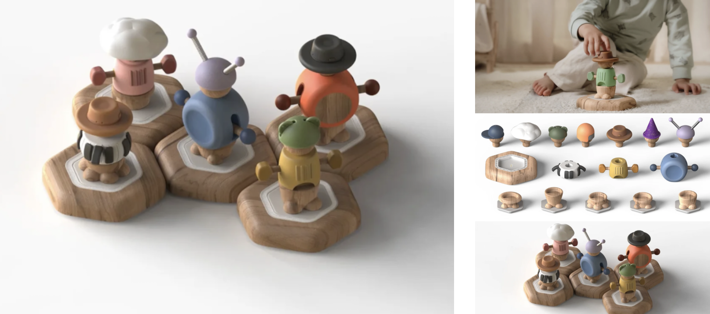

调研发现
儿童产品大致走向两端
垂直功能为特定年龄或群体解决一个明确问题。
物理玩法依靠抓握、建构、运动和想象适配儿童。
功能越聚焦，品类越窄；玩法越开放，关系越长。
CUBE / KABU · CHILD PRODUCT THINKING MAP
孩子照料一个住在六面体里的小生命。它会用声音、震动和动作表达状态；孩子带来的每次照料，都能被它接收、回应，并成为下一次相遇的记忆。
01 / FROM RESEARCH TO POSITIONING
先看市场，再看骰子的身体限制，最后才得出“实体数字生命”这个方向。每一步都在排除不适合它的产品定义。
调研发现
功能越聚焦，品类越窄；玩法越开放，关系越长。
形态判断
它的优势不在于塞进一个成人工具，而在于孩子天然会对它做什么：拿、翻、滚、堆、传、带走。
它先是一个被身体理解的体块，再是一个电子产品。
核心结论
把已有硬件的感知与表达，放进一个有状态、有偏好、有记忆的二进制生命体里。
不是让骰子功能更多，而是让每次玩法都多一层关系。
02 / THE UNCHANGED CORE
核心不靠主题音效成立，而靠一条持续的因果链成立：咔卟表现需要，孩子尝试照料，它做出回应并逐步恢复，之后仍记得这段经历。

生命感来自稳定的因果与记忆，不要求拟真。简单但连贯的音调、节奏和震动，对孩子就可能足够有生命感。
03 / ONE CORE, AGE-SELECTED BODIES
2—12 岁是可拓展的适用范围，不代表同一个外壳适合所有年龄。家长按孩子年龄选择外壳和配件；生命内核始终是同一个咔卟。
状态、偏好、记忆、回应、连接能力。
拿、翻、滚、堆、传、带走，脱离 App 也能玩。
材质、抓握、机关、变形、轮子、装扮与角色外观。
森林、海洋、太空等照料故事；实体配件让需要和照料具体发生。
选择情境、辅助看懂状态、同步照料记录与成长知识。
高对比颜色、不同纹理和声音刺激；外壳一体、易清洁、少零件。通过 IMU 可识别范围内的摇晃、翻转、静置，咔卟用简单声音和震动回应。
增加推动、滚动、开合、简单拼接或变形；孩子一操作，咔卟就用音调、震动或可实现的翻滚反馈。机关状态若要被识别，需加开关。
可装扮、组合和收集，满足潮流、社交认同与科技装备想象；例如机甲外壳。通过 NFC 情境配件照料咔卟，在故事中获得成长、知识和成就感。
耐摔、好抓握、便于清洁；小零件、磁铁、夹手缝隙和电池仓按年龄分别验证。
04 / CARE & EMPATHY
孩子观察咔卟的状态，尝试带来合适的照料；咔卟给出即时回应，并在一段时间里逐渐恢复。App 帮助孩子看懂发生了什么，但不代替实体互动。
生命状态变弱时，发出音调逐渐下滑、尾音变短的声音；回应变少、震动变轻。它表达需要，但不持续催促孩子。
孩子把露水 NFC 物件靠近骰子的指定感应区。NFC 识别的是“露水配件到了”，不是孩子的情绪或照料意图。
咔卟立即发出对应的短音与震动。比如露水是舒缓的节奏；阳光可以是上扬音调；土壤可以是稳定、低频的震动。现有蜂鸣器更适合改变音高、节奏和停顿，音强变化范围有限。
状态从“收到照料”进入“正在恢复”，再逐渐变得稳定、有活力。骰子的反馈也随状态变化，而不是碰一下就立即变强壮。
App 按日记录露水被识别和恢复过程，配一条与故事相关的简短知识。重点是理解“水分帮助它恢复”，不是做题或领成长积分。
App 选择故事，配件让孩子把照料从屏幕里拿到手上。
05 / HARDWARE REALITY
把生命表达落到现有硬件边界上：先用声音、震动、IMU 和 NFC 做一个可信的闭环，不把未验证的动作能力写成既有功能。
06 / PRODUCT THESIS
07 / LATEST ITERATION
最新判断：照料是咔卟的一种关系场景，不是唯一玩法。更大的产品概念是陪伴；孩子可以照料它、和它做音乐、一起探索或玩游戏。不同情境共享同一个生命内核、感知方式和记忆。
露水、阳光、土壤等 NFC 物件代表照料资源；咔卟反馈状态变化，App 记录共同经历。
记住：什么帮助它恢复咔卟与角色、底座、音节或节奏配件通过拼接和排布组成声音序列；改变组合，就得到不同的音节、节奏或音乐。
记住：共同编排过的声音组合咔卟与人物、地点、道具配件通过排列、拼接和组合，演绎森林、太空、医院、音乐会等不同故事；重新排布就能改写关系、情节和结果。
记住：共同演绎过的角色与故事骰子规则、轮流挑战、睡前安置或亲子小仪式，让它参与孩子真实生活。
记住：和谁一起玩过图中模块化角色、底座和配件只是编排方式的示意：咔卟和有声配件可以分别代表故事角色、音节、节奏或演奏风格。孩子通过拼接、排布和改变顺序，让不同配件发出声音，并组合成不同的音节、节奏或音乐。

生命状态是共用底层；每个情境有自己的进展和记忆。不要把音乐也做成喂养，不要让所有主题都只是在刷成长值。
购买动力目前是产品假设，后续要用家长访谈和孩子试玩验证。家长通常不会为“二进制生命体”这个内部概念买单。
摸、拼、摆、滚、发声；不是只能看屏幕或听讲解的玩具。
感官与动作探索、动手创造、故事陪伴、同理心练习和科普内容，可以成为不同阶段的价值。
外壳与场景包带来新玩法；孩子持续认识的是同一个咔卟，而不是一批互不相关的小玩具。
尤其低龄外壳要适龄安全；App 用于设定、理解与记录，实体互动要能独立成立。
08 / BASE SKU · NO EXTRA KIT
每个基础 SKU 默认带一个固定、适龄的保护外壳，不依赖可拆配件。孩子只用一颗或多颗咔卟，通过掷、滚、翻、摇、传递与 App 场景，就能完成一套儿童玩法。
骰子稳定后读取顶面，App 或面上图案给出清楚任务：跳跃、旋转、讲故事、模仿节奏、完成生活小任务。
根据本轮内容、动作强度、当前精力、性格和近期经历，选择声音、震动、抖动或休息反应，并更新下一次状态。
快速上扬短音、连续短震，像在一起使劲。
旋转式音调后下滑，轻微抖动，像有点晕。
安静下来，用轻微节拍陪伴；结束后突然回应。
长音逐渐升高，震动从弱到稳，像一起伸懒腰。
发出对应节奏的咔卟语，邀请孩子模仿。
缓慢规律的震动和低音，生命状态逐渐平静。
跳、转、平衡、伸展、模仿动物；生命反应表现兴奋、紧张、眩晕、疲惫与恢复。
咔卟发出声音和震动节奏，孩子拍手、摇动或敲击模仿，再由 App 增加难度。
六面对应人物、地点、事件或情绪；每次翻面推进故事，咔卟对剧情产生反应。
洗手、收纳、刷牙、睡前等生活小仪式；咔卟负责随机选择、陪同节奏和完成回应。
咔卟间隔发声、震动或随机抖动，孩子在安全空间寻找、追踪或把它送回指定位置。
随机决定谁先开始、抽取聊天问题或合作任务，让咔卟成为亲子互动中的第三个角色。
每颗咔卟负责一个规则，组合后生成更多变化；同时它们可以用不同性格回应，形成一群陪孩子玩的二进制小生命。
自己被掷、摇、翻、滚或重新静置；哪一面朝上；动作大致强弱；App 下发了什么场景规则。
孩子是否真的完成标准跳跃、刷干净牙、吃了一口饭，或现在是什么情绪。完成可用计时结束、摇一下确认或 App 点击确认。